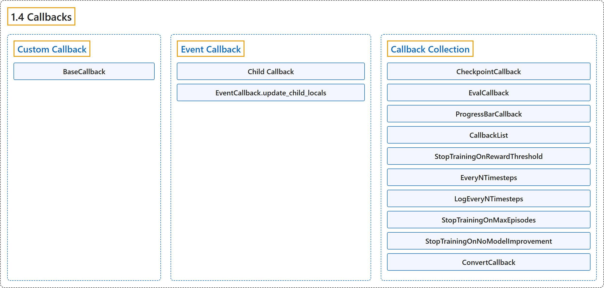

1.4 Callbacks
Classification

Glossary
| Term | Definition | 中文翻译 | Source |
|---|---|---|---|
| 1.4 Callbacks 回调 |
"A callback is a set of functions that will be called at given stages of the training procedure." | 回调是一组在训练过程的特定阶段被调用的函数。 | Raffin et al., n.d., "Callbacks", para. 1 |
| Custom Callback 自定义回调 |
"To build a custom callback, you need to create a class that derives from BaseCallback." | 要构建自定义回调，你需要创建一个派生自 BaseCallback 的类。 | Raffin et al., n.d., "Custom Callback", para. 1 |
| BaseCallback BaseCallback 回调基类 |
"Base class for callback." | 回调的基类。 | Raffin et al., n.d., "Callbacks", para. 1 |
| BaseCallback.init_callback init_callback 方法 |
"Initialize the callback by saving references to the RL model and the training environment for convenience." | 通过保存对强化学习模型和训练环境的引用来初始化回调，以便使用。 | Raffin et al., n.d., "Callbacks", para. 1 |
| BaseCallback.on_step on_step 方法 |
"This method will be called by the model after each call to env.step()." | 该方法会在每次调用 env.step() 之后由模型调用。 | Raffin et al., n.d., "Callbacks", para. 1 |
| BaseCallback.update_child_locals update_child_locals 方法 |
"Update the references to the local variables on sub callbacks." | 更新子回调上对局部变量的引用。 | Raffin et al., n.d., "Callbacks", para. 1 |
| BaseCallback.update_locals update_locals 方法 |
"Update the references to the local variables." | 更新对局部变量的引用。 | Raffin et al., n.d., "Callbacks", para. 1 |
| Event Callback 事件回调 |
"Compared to Keras, Stable Baselines provides a second type of BaseCallback, named EventCallback that is meant to trigger events." | 与 Keras 相比，Stable Baselines 提供了第二种 BaseCallback，名为 EventCallback，用于触发事件。 | Raffin et al., n.d., "Event Callback", para. 1 |
| Child Callback 子回调 |
(context) "When an event is triggered, then a child callback is called." | （语境）当一个事件被触发时，就会调用一个子回调。 | Raffin et al., n.d., "Event Callback", para. 1 |
| EventCallback.update_child_locals update_child_locals 方法 |
"Update the references to the local variables." | 更新对局部变量的引用。 | Raffin et al., n.d., "Callbacks", para. 1 |
| Callback Collection 回调集合 |
(context) "Stable Baselines provides you with a set of common callbacks for:" | （语境）Stable Baselines 为你提供了一组常用回调，用于： | Raffin et al., n.d., "Callback Collection", para. 1 |
| CheckpointCallback CheckpointCallback 检查点回调 |
"Callback for saving a model every save_freq calls to env.step(), you must specify a log folder (save_path) and optionally a prefix for the checkpoints (rl_model by default)." | 用于每调用 save_freq 次 env.step() 就保存一次模型的回调，你必须指定日志文件夹（save_path），并可选地指定检查点前缀（默认 rl_model）。 | Raffin et al., n.d., "CheckpointCallback", para. 1 |
| EvalCallback EvalCallback 评估回调 |
"Evaluate periodically the performance of an agent, using a separate test environment." | 使用单独的测试环境，定期评估智能体的性能。 | Raffin et al., n.d., "EvalCallback", para. 1 |
| ProgressBarCallback ProgressBarCallback 进度条回调 |
"Display a progress bar with the current progress, elapsed time and estimated remaining time." | 显示一个进度条，包含当前进度、已用时间和预计剩余时间。 | Raffin et al., n.d., "ProgressBarCallback", para. 1 |
| CallbackList CallbackList 回调列表 |
"Class for chaining callbacks, they will be called sequentially." | 用于串联回调的类，这些回调会被依次调用。 | Raffin et al., n.d., "CallbackList", para. 1 |
| CallbackList.update_child_locals update_child_locals 方法 |
"Update the references to the local variables." | 更新对局部变量的引用。 | Raffin et al., n.d., "Callbacks", para. 1 |
| StopTrainingOnRewardThreshold StopTrainingOnRewardThreshold 奖励阈值停止回调 |
"Stop the training once a threshold in episodic reward (mean episode reward over the evaluations) has been reached (i.e., when the model is good enough)." | 一旦回合奖励（各次评估的平均回合奖励）达到阈值就停止训练（即模型已经足够好时）。 | Raffin et al., n.d., "StopTrainingOnRewardThreshold", para. 1 |
| EveryNTimesteps EveryNTimesteps 每 N 步回调 |
"An Event Callback that will trigger its child callback every n_steps timesteps." | 一个事件回调，每隔 n_steps 个时间步触发一次其子回调。 | Raffin et al., n.d., "EveryNTimesteps", para. 1 |
| LogEveryNTimesteps LogEveryNTimesteps 每 N 步日志回调 |
"A callback derived from EveryNTimesteps that will dump the logged data every n_steps timesteps." | 一个派生自 EveryNTimesteps 的回调，每隔 n_steps 个时间步输出一次已记录的数据。 | Raffin et al., n.d., "LogEveryNTimesteps", para. 1 |
| StopTrainingOnMaxEpisodes StopTrainingOnMaxEpisodes 最大回合数停止回调 |
"Stop the training upon reaching the maximum number of episodes, regardless of the model’s total_timesteps value." | 达到最大回合数时停止训练，而不管模型的 total_timesteps 值。 | Raffin et al., n.d., "StopTrainingOnMaxEpisodes", para. 1 |
| StopTrainingOnNoModelImprovement StopTrainingOnNoModelImprovement 无改进停止回调 |
"Stop the training if there is no new best model (no new best mean reward) after more than a specific number of consecutive evaluations." | 如果连续超过特定次数的评估都没有新的最佳模型（没有新的最佳平均奖励），就停止训练。 | Raffin et al., n.d., "StopTrainingOnNoModelImprovement", para. 1 |
| ConvertCallback ConvertCallback 转换回调 |
"Convert functional callback (old-style) to object." | 把函数式回调（旧式）转换为对象。 | Raffin et al., n.d., "Callbacks", para. 1 |
References
Raffin, A., Hill, A., Gleave, A., Kanervisto, A., Ernestus, M., & Dormann, N.. (n.d.). Callbacks. Stable-Baselines3 docs (Version 2.9.2a0). Retrieved October 31, 2026, from https://stable-baselines3.readthedocs.io/en/master/guide/callbacks.html